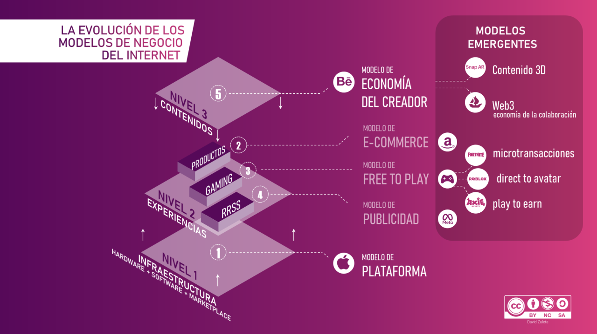

Innovación Empresarial
Las tecnologías web han permitido a las empresas innovar en sus modelos de negocio, mejorar la eficiencia operativa y expandirse a mercados globales.

Las tecnologías web han permitido a las empresas innovar en sus modelos de negocio, mejorar la eficiencia operativa y expandirse a mercados globales.